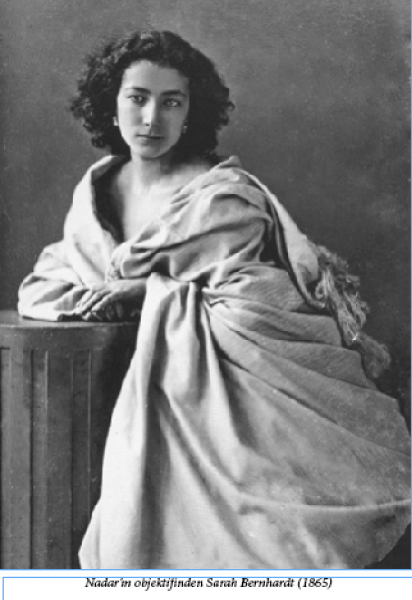
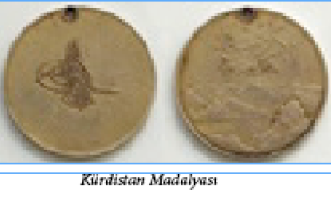
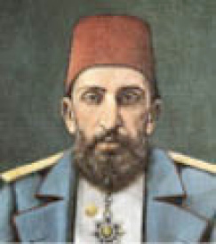

ALYON GİBİ ZENGİN!
Sultan Abdülmecit döneminde İstanbul’da yaşayan Fransız asıllı banker Antoine Alion’un öyle bir serveti vardı ki ara sıra Osmanlı hazinesine borç vermekteydi. Onun döneminde halk arasında “Alyon kadar zengin” diye bir deyim bile türemişti. Bir ara Beyoğlu’ndaki sokaklardan biri olan Alyon Sokak da adını bu namlı zenginden almaktaydı.
GEZGİN MEYHANECİLER
Eski İstanbul’da önceleri “piyade meyhaneci”, sonraları da “ayaklı meyhane” denen bir kaçak esnaf sınıfı vardı. Geneli Ermeni olan ayaklı meyhaneler bellerine gayet uzun bir koyun bağırsağı dolar ve bunun içine de rakı doldururlardı. Omuzlarına astıkları bir peşkir veya peştamal parçası da ayaklı meyhane olduklarının aslında herkes tarafından bilinen, sözde nişanesiydi. Üzerlerine giydikleri uzun cübbenin iç ceplerinde bir ya da iki tane kadeh taşırlar, isteyenlerin meze yapması içinde diğer ceplerinde elma, erik, leblebi vs. ufak tefek yiyecek bulundururlardı. Genellikle Bahçekapı ve Yemiş İskeleleri civarında dolaşan ayaklı meyhaneler müdavimleri olan müşterileri gördüler mi hemen bir köşeye sinerler ve bellerindeki koyun bağırsağının ucundaki musluğu açarak gelen müşteriye genelde ısınmış olup, kötü kokmaya başlayan rakıdan verirlerdi. Müşteri de o sırada yanda bulunan manavdan ufak bir meyveyi ağzına atarak meze yapar veya iyice ayyaş olanları sadece elinin tersiyle ağzını silip giderdi ki, buna da “yumruk mezesi” adı verilirdi.
KAŞAR PEYNİRİ OSMANLI’DA İCAT EDİLDİ
Kaşar peyniri ilk kez 19. yüzyıl ortalarında Osmanlı’da yaşayan bir Yahudi kadın tarafından icat edilmiştir. Yahudiler tarafından “dinen yenilebilir” olması için götürüldüğü Haham tarafından “kaşer”32 olarak onaylanması sonucu, adının da ‘kaşar’ kaldığı öne sürülmektedir.33
32 Kaşer: (veya koşer) Müslümanların “helal” kavramı gibi, Yahudilerin de bir besini yiyebilmesi için onun “kaşer” olması gerekmektedir.
33 TARİHİMİZDE İLKLER, Sf, 165, Haz: Oğuz Arıkanlı, Milliyet Yayınları, İstanbul, 1973
İSTANBUL ÜZERİNDE BİR BALON MACERASI
İstanbul’da balonla uçan ilk kişi Comaschi adında İtalyan bir havacıdır. 184434 yılında üçü de şehir halkı tarafından yakından izlenen üç uçuş gerçekleştiren Comaschi ilk uçuşunda Haydarpaşa Çayırı’ndan kalkarak Yalova’nın bir köyüne inmiş, ikinci uçuşunda Taksim’den havalanarak Yeşilköy’e inmiş, üçüncü ve son uçuşunda ise Haydarpaşa Çayırı’ndan havalanmış, ancak bu seferinde geriye dönmeyerek gökyüzünde kaybolmuştur.
34 www.ballong.org sitesindeki bilgilere göre, adamın tam adı Antonio Tomaschi’dir.
Adını bilmediğimiz bir dönem şairi de olayla ilgili olarak şu beyiti düşürmüştür:
Söyledi mürg-u kaza cevri havada tarih
(Söyledi hüküm kuşunun cefasını havada tarih)
Küre-i nâre çıkıp yandı Komaski bu sefer
(Ateşten küreye [gökyüzüne] çıkıp yandı Komaski bu sefer)
EN “BABA” PADİŞAH
II. Mahmut’un (1785 – 1839) oğlu olan Sultan Abdülmecit (1823 – 1861) Osmanlı Devleti’nin son dört padişahının da (V. Murat, II. Abdülhamit, V. Mehmet Reşat, VI. Mehmet Vahdettin) babasıdır. Batı kültürüyle yetiştirilmişti. İyi Fransızca konuşur ve Batı müziğinden hoşlanırdı. Babası II. Mahmut gibi yenilik yanlısıydı. Saltanatı sırasında en çok tutucuların muhalefetiyle karşılaştı. Osmanlı padişahları arasında, halkın dertlerini halkın kendi ağzından dinleyen ilk Padişah olmasıyla da tanınır. Kravat takan ilk Padişah olan Abdülmecit’ten sonra, Osmanlı devlet adamları ve bürokrasisi içinde kravat takma modası başlamıştı.

ZENGİNLER KENDİ YALILARINA BİLE
HÜKÜMET İZNİYLE GİDEBİLİRLERDİ
Tanzimat devrine kadar, devlet büyükleri ve İstanbul’un seçkin vatandaşları yaz geldiği zaman kendi mülkü olan veya kira ile tuttukları yalılara bile canları istediği zaman taşınamazlar ve mevsim sonu geldiğinde de, aynı şekilde, canlarının istediği zaman şehirdeki konaklarına dönemezlerdi. Hükümet herkesin o yazı Boğaziçi’nin hangi köyünde veya Haliç’in hangi tarafında geçireceğini önceden öğrenir, o yılın havalarına göre nihayet bir gün yalılara göç izni çıkardı. Şehre dönüşte de aynı yöntem uygulanırdı. Bu izinler çıkmadan hiç kimse yerinden kıpırdayamazdı. Hey yıl yaz mevsimi için, Payitaht’ın sahillerini korumakla görevli Bostancıbaşı Ağa tarafından Haliç ve Boğaziçi sahillerinin bir defteri düzenlenirdi. “Bostancıbaşı defteri” denen bu defterlerin sayfaları altın yaldızdan çizgilerle dama tahtası gibi kutu kutu bölünmüştü; liman ağzında Yalı Köşkü’nden Eyüp’ün ötesinde Bahariye’ye; karşı tarafta Karaağaç’tan Rumeli Kavağı’na; Anadolu yakasında da Anadolu Kavağı’ndan Haydarpaşa’ya kadar yalı, ev, dükkan, kayıkhane, cami, mescit, iskele, bahçe, arsa… Her ne varsa, sırası ile her birine bir kare ayrılmıştı. Meskenlerin sahipleri, eğer kirada ise sahipleriyle beraber kiracıların adları da yazılırdı.
Padişahlar yazın saltanat kayığı ile deniz gezisine çıktıklarında dümende Bostancıbaşı dururdu; Hünkâr merak edip “Şu yalı kimin?” diye sordu mu, Bostancıbaşı önündeki defterden: “Falan kulunuzun yalısı, kiracısı filan kulunuzdur” diye okuyuverirdi. Ya da padişah defteri önünde bulundurur, merak ettiği yeri kendisi okuyup öğrenirdi.
Tanzimat’tan sonra yalılara çıkmak için bu izin külfeti kalktı, fakat Meşrutiyet’e kadar bazı şartlar devam etti. Örneğin; Abdülaziz zamanında, yazın Kadıköyü’nde oturan Şeyhülislam Turşucuzade Ahmet Muhtar Efendi, kendi kayığını beklemeyip halk arasında vapura binerek Kadıköyü’ne geçtiği ve bu suretle “yüksek makamının şerefini koruyamadığı” için azledilmişti.
KITLIK ÇEKEN İRLANDA’YA
BRİTANYA KRALİÇESİ’NDEN
FAZLA YARDIM TEKLİF EDEN PADİŞAH
İngiliz gezgin Henry Christmast’ın “İstanbul ve Ege Yollarında” isimli yapıtı yazarın 1851’de İstanbul, İzmir, Efes, Bergama, Salihli, Alaşehir, Denizli ve Akhisar’a yaptığı gezileri anlatmakta, arada da şu bilgiyi iletmektedir:
“İrlanda’daki kıtlık yıllarında35 Sultan Abdülmecit bu mutsuz ülkedeki sıkıntıdan haberdar olur, İngiliz Büyükelçisi’ne derhal yardım etmek arzusunda olduğunu bildirir ve büyük miktarda yardım teklif eder. Kendisine, yardımın miktarını Britanya Kraliçesi’nin yaptığı bağış kadarıyla sınırlandırmanın doğru olacağı, bu yüzden majestelerinden daha fazlasının alınamayacağı ima edilir. Sultan büyükelçinin çözümünü sorgusuz sualsiz uygun bulup kabul eder ve hayırsever duygudaşlık ifadeleriyle kabul gören en yüksek bağışı gönderir.”
35 Büyük Kıtlık: 1845 – 1852 yılları arasında süren ve 1.000.000’dan fazla İrlandalının ölümüne ve bir o kadarının da ülkeden göç etmesine yol açan kıtlık felaketi. Patateslere dadanan bir hastalıktan dolayı ortaya çıktığı için “İrlanda Patates Kıtlığı” olarak da bilinir.

OSMANLI’CA DÎVÂN ŞİİRİ YAZAN
FRANSIZ ŞAİR
1842 Paris doğumlu Charles Vernay36 adında bir Fransız çocuk tarih kitaplarından Türkleri çok sevmiş ve hiçbir Türk’ü tanımadan kendi gayretiyle Türkçe öğrenmişti. Aruz vezniyle şiirler yazarak “Dîvân-ı Verne” adlı bir divan oluşturan ve kendini Fransız, İtalyan, Türk ve İranlı şair olarak nitelendiren Vernay, 1858 yılında bu divanını dönemin padişahı Abdülmecit’e ithaf ederek bastırmıştı. Bu padişahın şanına bir de kaside kaleme alarak İstanbul’a göndermiş olan Vernay zaman henüz on altı yaşında bulunuyordu.
36 Şairin adı kimi kaynaklarda Verné, kimi kaynaklarda Verney olarak geçmektedir. Koçu “Verné”, Seher Durmaz “Verné” ve “Verney” yazımlarını kullanırken Serhan Alkan İspirli “Divan-ı Verne” adlı kitabında doğru yazım olan “Vernay”ı kullanmıştır.
Vernay henüz on dört yaşındayken Latince, İtalyanca, İspanyolca, İngilizce, Almanca, Yunanca ve Yahudi dillerinin yanı sıra Arapça, Farsça ve Türkçe öğrenmiş ve İtalyanca, Farsça ve Türkçe şiirler yazmıştır. Vernay’ın henüz on altı yaşında litografi usulü ile Paris’te bastırdığı Türkçe ve Farsça şiirleri sonradan, 2000’li yıllarda Türk araştırmacılar tarafından ele alınmıştır. Vernay’ın dîvânı, 112 sayfadan ibaret olup; uzun bir önsözle birlikte, Türkçe ve Farsça şiirlerden oluşmaktadır. Vernay Dîvânı üzerine yapılan bir çalışma Azerbaycan Bakü’de bulunan Qafqaz Üniversitesi, Türk Dili ve Edebiyatı Bölümü’nde yüksek lisans tezi olarak, Prof. Dr. Ömer Okumuş danışmanlığında hazırlanmış ve Seter (Seher) Durmaz tarafından “Şarl Verne Divanı İnceleme – Metin – Sözlük” adıyla yayına hazırlanmıştır. 2010’da Salkımsöğüt Yayınevi tarafından basılan “Dîvân-ı Verne” adlı kitap ise Serhan Alkan İspirli tarafından hazırlanmıştır. Dr. İspirli, Atatürk Üniversitesi Kazım Karabekir Eğitim Fakültesi Türk Dili ve Edebiyatı bölümünde öğretim üyesidir. Kitabın üçüncü bölümü Charles Vernay’ın “Dîvân-ı Verne” adıyla hazırladığı kitabın transkripsiyonudur.
Bu olağanüstü şairin şiirlerinden bir örnek de şöyle:
Hikmet-i aşkda üstâdım ben
Manzar-ı hayret-i Bağdâdım ben
Emr-i hattı rakam-ı kilkimdir
Kâtib-i Hüsrev-i bî-dâdım ben
Subh u şâm eşk-feşânlıkdır işim
Nâzım-ı hâtır-ı nâ-şâdım ben
Gurbet-i hicre bu dünyâda gelip
Müsteşâr-ı sefer-i yâdım ben
Yazdı Verne bu gazelde hâlin
Dedi sevdâ ile ber-bâdım ben.
KÂTİBİM TÜRKÜSÜ
İstanbul türkülerinin en ünlüsü olan “Kâtibim” türküsünün şöyle bir öyküsü olduğunu Reşat Ekrem Koçu aktarmaktadır:
“Bu türkü için, güzel bir kâtip hakkında, bir kız ağzından söylenmiştir diye uydurma hikâye nakledilir. Türkünün ilk kıtasını hatırlayalım:
“Üsküdar’a gider iken aldı da bir yağmur
Kâtibimin setresi uzun eteği çamur
Kâtip uykudan uyanmış, gözleri mahmur
Kâtip benim ben kâtibin el ne karışır
Kâtibime setre de pantol ne güzel yaraşır!”
Bu türküde bir güzel kâtibi övmekten ziyade genç ve güzel kâtiple alay etme anlamı vardır ve bir kız ağzından söylenmiş olmaktan çok, bir İstanbul külhanisinin mantığına yakışmaktadır. Türkü Kırım Savaşı içinde, Abdülmecit devrinde çıkmıştır. II. Mahmut Avrupalı kıyafetini ordu mensubuna giydirmiş, fakat sivil memurları bu konuda serbest bırakmıştı. Abdülmecit, Kırım Savaşı başlayınca, bu zorunlu giyimi İstanbul’daki en küçük bir kâtibe varıncaya kadar, sivil memurlara da uyguladı. Memuriyetinden başka geçim vasıtası olmayan yoksul veya orta halli ailelerin çocukları cübbe ve şalvar yerine setre ve pantolon giydiler. Tutucular da bunu dillerine dolayıp “gâvur taklitçiliği” dediler ve pantolonla sokağa çıkmayı iç donuyla çıkılmış gibi saydılar. Hele genç ve eli yüzü düzgün kâtipler büsbütün dile düşürüldü.
Kırım harbinde müttefiklerimiz olan İngilizler, Fransız ve Sardunyalıların orduları İstanbul’dan geçmişti. Üsküdar civarında Selimiye Kışlası da bu gayrimüslim Avrupalı müttefiklerimizin emrine hastane olarak verilmişti. İstanbul’dan geçen İngiliz ordusunda bir de İskoç alay vardı; meşhur gaydaları ve pantolon yerine kısa etekleriyle İskoçyalılar, İstanbulluların pek tuhafına gitmişti ve bu garip kıyafetli yabancılara “donsuz asker” lakabı takılmıştı. İskoç alayı da Doğu’ya hareket ederken, bir İskoçyalı besteci bu alay için özel bir marş bestelemişti. Bu marşın bestesi, bizim meşhur “Kâtibim” türküsünün nağmeleridir. İşte, bir İstanbul külhanisi, Avrupalıların Selimiye Kışlası’nda yerleşmesine “Üsküdar’a giderken…” diye genç kâtipler hakkında yukarıdaki türküyü yazmış, ona beste olarak da ‘donsuz askerler’in marşını almıştı. 20. yüzyılın başında, çalgılı küçük konsol saatleri çıktı. Bu saatler Türkiye’ye önce İskoçya’dan gelmişti ve üretici fabrika bu güzel marşı da saatin nağmeleri arasına yerleştirmişti. “Kâtibim türkülü saat” diye büyük ün kazanan saat İstanbul’da çok büyük satış rakamlarına da ulaşmıştı.”
HEPSİ DE AHMET PAŞA !

Soyadının kullanılmadığı dönemlerde ülkemizde insanlar adları dışında, çeşitli özelliklerinden dolayı taşıdıkları lakaplarla birbirlerinden ayrılırlardı. Bu lakaplar konusunda yaratıcı, ilginç, hatta sınırsız olunduğunu bir kanıtı olarak hepsi de Ahmet Paşa olan şu kişilerin lakaplarına bir göz atmak sanırız yeterli olacaktır: Abuk Ahmet Paşa, Altıpoğaça Ahmet Paşa, Ankebut (örümcek) Ahmet Paşa, Arnavut Ahmet Paşa, Babanzade Ahmet Paşa, Cezzar (kasap) Ahmet Paşa, Dukakinoğlu Ahmet Paşa, Ekmekçizade Ahmet Paşa, Gedik Ahmet Paşa, Hain Ahmet Paşa, Hezarpâre (bin parça) Ahmet Paşa, Hiramî Ahmet Paşa, Humbaracı Ahmet Paşa, Kalaylıkoz Ahmet Paşa, Kara Ahmet Paşa, Kavanoz Ahmet Paşa, Kemankeş Ahmet Paşa, Melek Ahmet Paşa, Pabuççu Ahmet Paşa, Semiz Ahmet Paşa, Şehlâ Hacı Ahmet Paşa, Şeker Ahmet Paşa, Tarhuncu Ahmet Paşa…
DEVLET KUMARHANESİ : ENCÜMEN-İ ÜLFET
1870 yılında Maliye Bakanı Mısırlı Prens Mustafa Paşa tarafından, Çemberlitaş’taki Asım Paşa Konağı’nda açılan ‘Encümen-i Ülfet’ (Dostluk Derneği) Türkiye’deki ilk kumar kulübüydü. Yalnızca yüksek rütbeli memurların girebildiği bu kumarhanede, oyun salonları dışında, okuma ve sohbet odaları da bulunmaktaydı. Sadrazam Mahmut Paşa kulüpte kumar dışında bir etkinlik olmadığını öğrenince, salonu kapattırdı.
CASUS SARAH BERNHARDT!
Dünyaca ünlü tiyatro oyuncusu Sarah Bernhardt (1844–1923) İstanbul’u üç kez ziyaret etmişti: 1888, 1904 ve 1908 yıllarında. Ancak 1888 yılındaki ilk gelişinde henüz ülkemizde tanınmayan Bernhardt, II. Abdülhamit’in hafiye teşkilatı tarafından dikkatle takip edilmiş, hatta saraya yaranmak isteyen birkaç hafiye de sanatçı ve ekibi hakkında “şüphe sahibi olduklarını” ima eden birkaç “jurnal” (ihbar) yazmışlardır. Bu yazılan ihbar mektuplarından ikisi hâlâ Başbakanlık Devlet Arşivi’nde korunmaktadır.
Oyuncunun ikinci gelişi de dönemin ‘Sabah’ gazetesinin 6 Aralık 1904 tarihli sayısında kısa bir haberle yer alırken, ancak üçüncü ve son gelişinde, Kasım 1908’de Cenap Şahabettin imzasıyla çıkan bir yazıda kendisinden hakkı teslim edilerek söz edilmiştir. Bu yazı yazarın “Evrak-ı Eyyam” adlı kitabında bulunabilir.
KOLERA MADALYASI
Kolera Madalyası, 1865 yılında dönemin sultanı Abdülaziz tarafından çıkarılan ve İstanbul, Suriye ve Kuzey Irak’taki kolera salgınlarının önüne geçilmesi için yararlılık gösterenlere verilmek üzere tasarlanmış bir madalyaydı. Tasarımını dönemin ünlü oymacısı Abdülfettah Efendi’nin yaptığı madalyanın ön yüzünde bir güneş kursuna benzetilmiş Abdülaziz portresinden ışınlar saçılmakta, arka yüzünde ise Osmanlı Devleti’ni simgeleyen büyük bir ağaca şimşekler düşmekteydi.
KÜRDİSTAN MADALYASI
Bedirhan Bey liderliğindeki Kürt ayaklanmasını bastıran ve ayaklanma lideri ile yardımcılarını İstanbul’a getiren Müşir Osman Paşa’ya 1846 yılında dönemin padişahı Abdülmecit tarafından bir “Kürdistan Madalyası” takılmıştı. Dört çeşidi olan Kürdistan madalyasının ön yüzünde padişahın tuğrası, arka yüzünde de kabartma bir dağ dizisi vardı. Bu dağ kabartmasının üzerinde “Kürdistan”, altında da “sene 1263” yazıları vardı. Altın ve gümüş olarak bastırılan bu madalyalar ayaklanmanın bastırılması sırasında yararlılık gösterenlere rütbe sıralarına göre değerlendirip verilmişti.
YETER Kİ TREN GEÇSİN!
Fransızlar Avrupa’yı Asya’ya bağlayacak bir demiryolu projesi hazırlamışlardı. Ancak planlanan güzergahın Topkapı Sarayı’nın bahçesinden geçtiği anlaşılınca kimse konuyu padişaha açmaya cesaret edemedi. Yenilikçi padişah Sultan Abdülaziz durumu öğrendiğinde Sadrazam Ali Paşa’ya, “Şimendifer tek yapılsın da isterse sırtımdan geçsin” diyerek çıkıştığı bilinir...
BİLETLİ MEVLİT
Türkiye’de ve belki bütün İslâm âleminde, yalnız bir defa camiye para karşılığında girilerek mevlit dinlenmiştir. Bu paralı mevlit 1877 Rumeli bozgununda muhacirler yararına Beyazıt Camii’nde okutturulmuş ve camiye 20 kuruşluk yardım biletleri alınarak girilmiştir.
ATİNA BALI
Yunanistan’ın Osmanlı topraklarına dahil olduğu dönemlerde hemen tüm İstanbul zenginlerinin en sevdiği tatlı, Atina balı idi. Yunanistan’a giden birinin dönerken tanıdıklarına getirebileceği en nadide hediye de Atina balıydı. Aynı şekilde Girit balı da son derece yaygın ve değerliydi. Bu iki bal diğerlerinden daha pahalıya satılmasına rağmen, özellikle Atina balını bulup satın almak hiç de kolay değildi.
YORGANCI ÖLÜ BESİM
1884 – 85 yıllarında Üsküdar civarında yorgancı esnafı olarak çalışan Besim adında bir delikanlı vardı. Hem fizik güzelliği, hem de adabı ve terbiyesiyle herkesin takdirini toplayan bu delikanlı bir gün dükkanda yorgan dikerken “Bana bir şeyler oluyor usta!” dedikten sonra aniden düşüp ölüverdi! Mahalle halkı hemen toplandı, acı ve gözyaşları içinde yorgancı Besim, Karacaahmet mezarlığına gömüldü…
Ne var ki ertesi gün “Yorgancı Besim dirilmiş, dükkanına dönmüş” diye bir haber ortalığı birbirine kattı. Duyanlar koşup bir baktılar ki Besim gerçekten orada! Aynı boy, aynı bos, aynı ses, aynı gözler… Ne var ki delikanlının herkesi kıskandıran bembeyaz teni bir gecede adeta zenci esmerliğine dönmüştü.
Sonunda durum anlaşıldı: Bir önceki gece, iki tane serseri bir fahişeyi alıp mezarlığa gitmişler ve orada rakı sofrası kurup âleme dalmışlar. Tam keyifler yerindeyken yanlarındaki mezardan inlemeler gelince serseriler fırlayıp tüymek üzereyken, daha ayık olan kadın “Yahu belki de birini yanlışlıkla diri diri gömmüşlerdir, çok olur böyle olaylar… Adamı kurtarırsak büyük sevaba gireriz ve ben de vallahi billahi tövbekâr olurum!” filan deyince iki adam ve bir kadın elleriyle, sopalarla vs. inilti gelen mezarı kazmışlar. Kısa süre içinde de mezardan gerçekten de ölüp ölmediği tam olarak anlaşılmadan palas pandıras gömülen Yorgancı Besim, korkudan gözleri patlamış ve bembeyaz teni kapkara olmuş halde çıkıvermiş! Adamların üstündeki bazı giysileri ve kadının da feracesini giyen Besim geceleri yattığı yorgancı dükkanına dönüvermiş…
Ancak Besim döndükten sonra her şey değişti. Halk artık ona “Yorgancı Ölü Besim” demeye başlamıştı ve kimse onunla görüşmek istemiyordu. Önce ustası onu işten ayırdı, sonra da ahali onunla görüşmeyi kesti. Ne var ki o gece onun mezardan kurtulmasına vesile olan kadın Besim’i bırakmadı, onunla evlendi ve karı koca Bursa’ya giderek çoluk çocuğa karıştılar. “Yorgancı Ölü Besim” olayını İstanbul Ansiklopedisi’ne bizzat anlatan yazar Vasıf Hiç 1908 veya 1910 yılında Bursa’ya gidip Ölü Besim’le ve eşiyle tanıştığını ve Besim’in “Aman Vasıf, maceramı kimseye anlatma” diye ricacı olduğunu söylemektedir. Yazarın dediğine göre, evlenip iki çocuk sahibi olan Besim’in durumu artık düzelmiştir, ama yüzündeki acayip esmerlik olayın üzerinden geçen on beş yıla rağmen aynen durmaktadır…